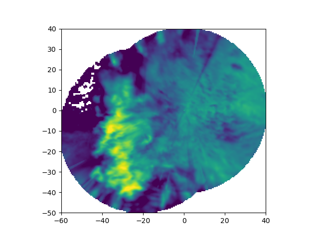

Note
Go to the end to download the full example code.
Map two radars to a Cartesian grid#
Map the reflectivity field of two nearby ARM XSARP radars from antenna coordinates to a Cartesian grid.
print(__doc__)
# Author: Jonathan J. Helmus (jhelmus@anl.gov)
# License: BSD 3 clause
import matplotlib.pyplot as plt
import pyart
from pyart.testing import get_test_data
# read in the data from both XSAPR radars
xsapr_sw_file = get_test_data("swx_20120520_0641.nc")
xsapr_se_file = get_test_data("sex_20120520_0641.nc")
radar_sw = pyart.io.read_cfradial(xsapr_sw_file)
radar_se = pyart.io.read_cfradial(xsapr_se_file)
# filter out gates with reflectivity > 100 from both radars
gatefilter_se = pyart.filters.GateFilter(radar_se)
gatefilter_se.exclude_transition()
gatefilter_se.exclude_above("corrected_reflectivity_horizontal", 100)
gatefilter_sw = pyart.filters.GateFilter(radar_sw)
gatefilter_sw.exclude_transition()
gatefilter_sw.exclude_above("corrected_reflectivity_horizontal", 100)
# perform Cartesian mapping, limit to the reflectivity field.
grid = pyart.map.grid_from_radars(
(radar_se, radar_sw),
gatefilters=(gatefilter_se, gatefilter_sw),
grid_shape=(1, 201, 201),
grid_limits=((1000, 1000), (-50000, 40000), (-60000, 40000)),
grid_origin=(36.57861, -97.363611),
fields=["corrected_reflectivity_horizontal"],
)
# create the plot
fig = plt.figure()
ax = fig.add_subplot(111)
ax.imshow(
grid.fields["corrected_reflectivity_horizontal"]["data"][0],
origin="lower",
extent=(-60, 40, -50, 40),
vmin=0,
vmax=48,
)
plt.show()
Total running time of the script: (0 minutes 11.139 seconds)